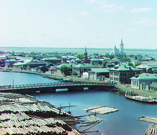

cathedral.jpg

monastery.jpg

tobolsk.jpg
Sergei Mikhailovich Prokudin-Gorskii (1863-1944) was a Russian photographer and chemist renowned for his pioneering work in early color photography. He record three exposures of every scene onto a glass plate using a red, a green, and a blue filter. His extensive collection of photographs, preserved and digitized by institutions like the Library of Congress, provides a unique and valuable historical record of that era.
This project will put his theory into practice by synthesizing the original image through the red, green, and blue channels of the image. On the basis of exhaustive search, I used the search method of image pyramid and the technique of automatic white balance and edge detection to achieve faster search speed and higher image quality.
cathedral.jpg
monastery.jpg
tobolsk.jpg
At first, I assumed that the pixel offset was [-15, 15], and found the best match between the red, green, and blue channels in this range. I used both MSE and NCC methods to calculate the matching score. Although both have good results, I believe NCC can match images more reasonably than MSE, because some images have pixels that are not similar in the three channels. For example, in emir.tif, the pixel value of clothes in the blue channel is larger, while the pixel value of clothes in the red channel is smaller. If you want to match the two, using MSE cannot well represent the degree of image matching because their pixel differences are significant. However, using NCC for absolute value calculation will not have such concerns. In the subsequent improvement work, I used NCC as my scoring function.

NCC
Although exhaustive search performs well most of the time, when the channel displacement is too large, the search will take a long time. To solve this problem, I used the image pyramid search method. Specifically, the image is scaled proportionally to a suitable size (e.g. less than 40000 pixels) and searched around the corresponding position of each size, continuously updating the offset. Before searching, I cropped out the black pixels at the edges of each channel to avoid affecting the matching score, and finally cropped out 10% in each direction to maintain the beauty of the image. After this process, most of the images have been successfully matched, except for emir.tif. Next, I will use some improvement methods to make it match better.
https://en.wikipedia.org/wiki/Pyramid_(image_processing)
In the process of selecting the scoring function, I realized that in the matching process, we should focus on the changes in pixels rather than their values. I tried using Prewitt Operator's automatic edge detection and using image gradients as feature input, both of which performed well, especially with significant improvements on emir.tif. Prewitt Operator refers to the convolution kernels in the x and y directions. I use it to perform convolution operations on the image, obtain edge detection results in the x and y directions, and calculate their sum of squares as input features for pixels. Futhermore, I transform the original RGB coordinates to XYZ coordinates, where Y represents the brightness of a pixel in images. I found the pixel with the highest brightness in the entire image, assuming it is white, and scaled the RGB of the entire image.

before

after
cathedral.jpg

church.jpg
emir.jpg
harvesters.jpg
icon.jpg
lady.jpg
melons.jpg
monastery.jpg
onion_church.jpg
sculpture.jpg
self_portrait.jpg
three_generations.jpg
tobolsk.jpg
train.jpg